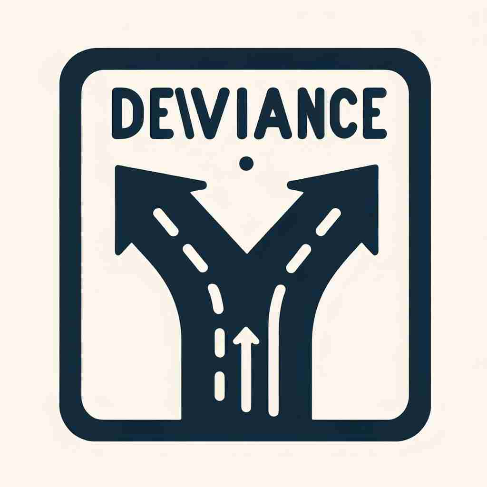

💬 The sign shows that social deviance can lead people in different directions. 标志表明社会偏差可能使人们朝着不同的方向发展。

💬 The artist illustrates deviance from norms by showing a winding road. 艺术家通过展示一条蜿蜒的道路来描绘对规范的偏离。
💬 The sign shows that social deviance can lead people in different directions. 标志表明社会偏差可能使人们朝着不同的方向发展。
💬 The artist illustrates deviance from norms by showing a winding road. 艺术家通过展示一条蜿蜒的道路来描绘对规范的偏离。
🧠 想象一条直线代表"正常"或"标准"，而'deviance'就是从这条线偏离的程度。无论是行为、数值还是特定领域如性行为，都可以用这种"偏离标准"的概念来理解。这个核心idea贯穿了'deviance'的各种用法，有助于更好地记忆和理解这个词。
🗝️ n. behavior that is different from what is considered to be normal or morally correct 与被认为是正常或道德上正确的行为不同的行为
🎭 想象一个小镇的社区聚会上，当地居民们围坐在一起讨论城市建设计划。一个年轻人站起来，提议创建一个极具创新性的新型公共空间，打破传统布局。这一提议在某些人看来显得陌生而不太符合常规，展现了 'deviance' 作为与通常或道德正确的行为不同的含义。
💬 The study focuses on social deviance in urban areas. 该研究侧重于城市地区的社会偏差。
🌳 由词根 "vi-"（道路、路）构成，通过前缀 "de-"（远离）加上名词后缀 "-ance" 形成，表示偏离正轨或规范的行为。
💡 记忆 "deviance" 时，可以联想为 "de-vi"（脱离了道路），即行为或态度偏离了传统或正常的轨道。通过将偏差的概念与离开正道关联，帮助记住这个词的意义。
🗝️ n. the amount by which something is different from a standard or from the average 与标准或平均值的差异量
🎭 在一个数据分析公司中，分析师正在展示一份市场调查结果。他在屏幕上标出一条红线，表示销量数据显示中的平均值，并指出某个月份的销售额明显高于平均线，这一差异被称为 'deviance'，即偏离标准或平均值的量。
💬 There is a significant deviance in the test results from what was expected. 测试结果与预期存在显著偏差。
🤔 从核心含义的"行为偏离"扩展到"数值偏离"
🗝️ n. actions or behaviors that violate social norms 违反社会规范的行为或举动
🎭 在一个传统的村庄，一位年轻女孩剪短了头发并穿上了现代风格的服装走在街上。村庄的老人们在茶馆里议论纷纷，认为她的行为与长期以来的社会规范相悖，这正是 'deviance' 在违反社会规范上的意义。
💬 Juvenile deviance is a growing concern in many communities. 青少年偏差行为在许多社区中日益受到关注。
🤔 强调核心含义中的社会规范层面
🗝️ n. sexual behavior that is considered abnormal 被认为是异常的性行为
🎭 在一个心理学研究的课堂上，教授正在讲解性行为的不同类型。他提到某些行为在大多数社会中被视为异常，并受到讨论和研究。这一切就是 'deviance' 作为被认为异常的性行为的含义。
💬 The psychology course included a discussion on sexual deviance. 心理学课程包括了对性偏差的讨论。
🤔 将核心含义具体应用于性行为领域